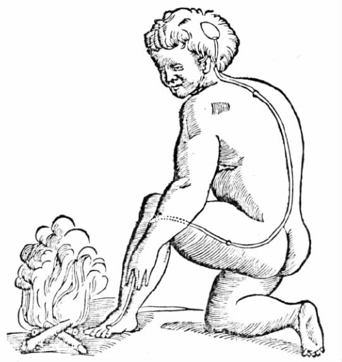
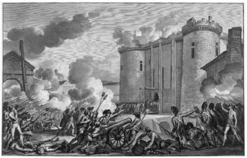
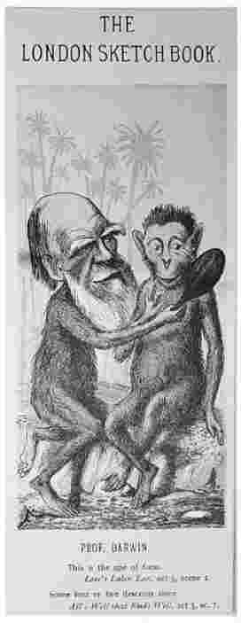
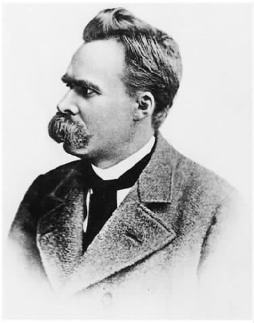

在第二、三、四章我们分别详细解读了三部哲学著作。在本章我将再简单介绍一些我个人比较偏爱的作品。选择它们完全是出于个人喜好——如果其他人写这样一本书很可能会选择介绍其他作品。而且，这里也只能介绍一小部分。但是放心，还有很多其他的著作，实际上不管你读了多少，仍然 有很多很多是你未读到的。
在第二章，我曾说过柏拉图在《格黎东篇》中所描述的关于伦理的辩论似乎就发生在昨天，而他的宇宙论则能将我们带回一个完全不同于今的世界。的确是这样的——但是我们不需要回到柏拉图的时代，我们只要往回追溯四个世纪，回到1600年就行了。这一年实际上离哥白尼提出用新体系代替传统的托勒密天文体系已经有五十多年了。哥白尼将太阳移到了太阳系的中心，地球现在只是一系列相似的行星中的一颗，围绕太阳转动。但是几乎没有人相信他的话。这时候伽利略（1564—1642）还未开始公开为自己的观点辩护，而当他这样做的时候，也根本没有人相信他。
日心说的意义并不仅仅在于太阳取代了地球崇高的中心地位。事实根本不是这样的，因为我们今天所说的现代物理学认为中心位置并不让人向往：中心地带往往是低劣物质容易聚集的地方，我们几乎可以称之为太空垃圾场。相比较，其他因素远为重要。《圣经》中有些段落似乎坚持地球是静止的，而现在有个人根据自己的推理，不借助某个合适的权威，或者是无视权威，打算反对这些段落中反映的思想或者至少是重新解读这些段落。此外，不用说伽利略的观点，哥白尼的观点就与当时在大学中盛行的（新亚里士多德）物理学和宇宙论观点相抵触。
亚里士多德主义者认为最低劣的物质是土和水。土和水与空气和火不同，它们天生就努力想到达宇宙的中心，因此在那里形成了一个球状的聚合体，地球。（不管你多么经常地听到有人说，中世纪时人们认为地球是平的，事实都不是这样的。那时的人并不如此认为。）但是月亮、太阳以及其他行星和恒星上根本没有土和水这类物质，甚至也没有空气和火。这些天体是由精华 ——第五元素构成的，不会腐烂，也永不改变。这些天体只是围绕圆形轨道圣灵般安静地运行，永不停歇。现在新的天文学想要否定地球和其他天体之间的这种区别：不管从我们现在所站的位置来看、来感觉事物是什么样的，地球就是地球，在天空中存在；天体之间也并非完全不一样，它们和地球一样都是适合科学研究的对象。更重要的是，现代科学家想摒弃从本质和目标角度进行的解释，用粒子论，即物体是由粒子构成的，以及服从数学定律的机械因果律取而代之。
这一切表明了知识界同时在几个层面上发生了颠覆性的变化。这些变化常常被称为科学革命。这样命名体现了变化范围之广，幅度之大，但是却给人一种错觉，以为这些变化是快速进行的。这就难怪变化的同时还兴起了怀疑论，因为如果那些被人们所接受的、两千年来在科学史上处于优胜地位的最优秀的知识现在被认为是错误的，人们本能的反应便是轻视人类所有的知识，不再对知识作任何探索。
勒内·笛卡尔（1596—1650）认为亚里士多德主义虽然长期以来为大家所推崇，但却是一套错误的体系。怀疑论者也持同样的观点。不过与怀疑论者不同的是，笛卡尔同时还把亚里士多德主义看作是一种障碍：它阻碍人类去认识本质，就像怀疑论自身也阻碍人类认识本质一样。因此他构想了一个宏大的计划。（如果当时认识到自己的计划如此 宏大，他可能会就此放弃这个计划，在自己思想发展的轨道上停下来——所以我们应该感到庆幸，他没有改变主意。）笛卡尔首先回到一个阶段，在这个阶段怀疑甚至不可能存在，然后按照显而易见的步骤重建人类的知识体系。在此过程中笛卡尔会竭尽全力排除怀疑主义这个障碍，也许同时还会排除亚里士多德主义，因为他并不希望自己的重建计划指向陈旧、犹豫的老路。然后他会利用科学发展的显著成果来说明人类智力的这个英雄性大逃避的价值：光学、物理学、生理学和气象学等领域在笛卡尔著作中都有所涉及。
《正确运用理性的方法论》 [1] （1637）并非笛卡尔最重要的作品——他最重要的作品当然是《沉思录》（1641）了。但是《方法论》一书有一个优点：它利用很短的篇幅就能让读者了解到笛卡尔的主要思想。其中很重要的一点是，书中还对他整个探究计划产生的背景与动机进行了自传式的记录。
所以抽出一两个小时来——这很容易做到，从理解笛卡尔的烦恼开始切入，因为笛卡尔接受的正规教育使他感觉到“我没有得到任何东西，……只是越来越认识到自己的无知”，世上“不存在以前接受的教育引导我去追求的那些知识”。必须承认，他在学校学到的知识中有一些是有价值的。他也曾各用一句话谈到语言、历史、数学、演讲术和诗歌等学科的价值——虽然演讲术和诗歌“更大程度上是天赋，而不是刻苦学习的结果”。至于哲学，它的主要“好处”在于能让我们“在谈到任何话题时都能说出一套，从而赢得学问不如自己的人的敬佩”——经院派的亚里士多德主义哲学就有此功效。因此当觉得自己足够老的时候，笛卡尔马上就把哲学丢在一边，开始四处旅行，并参加了当时在欧洲爆发的激烈战争。也许实干家比学者能提供更多的真理，毕竟实干家判断失误所带来的严重后果会真真实实地落到他们自己头上，而学者判断失误并不会带来任何实际的后果，因此可以错而免罚。
笛卡尔在旅行时发现一点：各个地方、各个民族的风俗习惯差别很大——他尖锐地指出，哲学家的观点差别有多大，这种差别就有多大——因此最好不要相信任何只通过“习惯和实例”学到的知识。这个时候很多人（现代社会这样的人甚至更多）可能会因为悲观而走向怀疑主义或是因为懒惰而走向相对主义。但是笛卡尔不会。笛卡尔的反应是声称如果要避免生活在错误思想的指导之下，一生中就必然要有一次打碎自己整个的信仰体系，然后进行重建。他打算进行这样的尝试——而且是独自一人进行。
笛卡尔——毫无疑问还有许多不如笛卡尔那么善于表达自己或不如他那么自信的同时代的哲学家——正在经历的这场大变动，得到了坚定积极的回应。这种回应大胆之至，不得不让人感到吃惊。也就是说，如果我们相信笛卡尔是当真的话——不过我找不到任何合适的理由认为他并不当真。在《方法论》一书的第二部分，我们可以读到笛卡尔努力安慰那些认为他可能是社会、政治和神学方面的改革者的读者：“我所做的不会对任何大众习俗产生威胁，我所要颠覆的不过是我自己的信仰而已。”（他的尝试非常谨慎，也很出色，不过一点也不具有说服力，不是吗？就好像他不打算向任何人介绍自己创立的新体系。）接下来，在第三部分，他设法保证尽管他的信仰悬置未定，但是他的生活还照常进行，因为“在开始重建房屋之前，你必须为自己找个地方，以便在建房期间居住”。因此他只是模棱两可地支持自己身边最理智、最温和的观点或行为。如果他曾经阅读过塞克斯都·恩披里柯介绍古代怀疑主义者的书，他会发现自己的做法是在该书基础上的一个改进——古代怀疑主义者一直面对的是同一个问题，因为他们不打算重建一个新的信仰体系。
这种颠覆、打碎的过程是如何发展的，笛卡尔又将在哪里找到构建新体系的基础？第四部分开头，笛卡尔突然假装变得羞涩：也许他是应该绕过这些问题，因为这些问题“过于形而上，过于特别，不适合大众的口味”。不过后来他还是回答了这些问题。我们可以看到，第四部分简单扼要地介绍了他最有名的作品《第一哲学沉思》 [2] 。
首先，悬置所有你可能找到一丁点理由进行怀疑的信仰。（别费心去考虑这些理由是否真的让你感到怀疑 ——大部分情况下都不会，但是那可能就发生在你身上。）既然有时候你的感觉欺骗了你，那么考虑一下这种可能性：任何时候感觉都可能会欺骗你，实际上可能一直都在欺骗你——感觉不过是一场梦或是一种幻觉。那么你对自己目前正在进行思考这一点的确信呢，是否也是一场梦或是一种幻觉？以此类推，怀疑的确是有止境的，因为怀疑自己是否在思考也是一种思考——这种怀疑自己打败了自己。笛卡尔认为，如果我在思考，那么我必然存在——由此，我们就得到了那句著名的“我思故我在”。
你可能会疑惑，经过如此艰难的考验，可信的已幸存无几，笛卡尔将如何在此基础上进行重建呢。然而他并没有被这艰巨的任务吓倒。他已经发现他对自身存在的认识是完全可靠的，但是他可以怀疑任何其他东西，甚至自己的身体。因此他（他的意识、灵魂、自我）肯定是不同于身体的其他东西，没有身体也能存在。身体是一回事，意识又是一回事——这就是我们在第六章看到的著名的（也可以说臭名昭著的）笛卡尔二元论（第68页）。
下一步，笛卡尔认为他知道有一个完美的存在物，即上帝，从而引发了下面这个问题：他是怎样获得思考能力从而得出这样一个结论的呢？他在其他地方曾指出，如果你脑海中有一幅极其复杂的机器蓝图，那么我们要么认为你本人就是一位杰出的工程师，要么认为你是从一位杰出的工程师那里学到这些的。因此，既然笛卡尔知道自己是不完美的，那么他就承认关于完美存在物的观点并非源自他本人，而只能源自一个本身就完美的东西。他的观点是他的创造者留下的标记。
许多读者会觉得笛卡尔关于完美存在物的观点过于模糊、不精确，也就是说，并不完美，从而并不需要笛卡尔之外的其他人来证实产生这个观点的原因。但是笛卡尔自己认为上帝的存在是已经被证实的，而且他还进一步认为：当他已经完全清楚自己的能力的时候，他所相信的必然是正确的。否则，原则上他所拥有的上帝赋予的能力就会误导人，这样上帝就成了欺骗者，因而是不完美的。因此如果怀疑论认为即便我们尽了最大的努力结果还是可能错误，那么就放弃怀疑论。
在第五部分，我们又可以看到笛卡尔的一些自我介绍。他开始介绍自己的科学研究成果。之前他曾“在一篇论文中花大力气解释这些科学问题。不过出于某些考虑，这篇论文没有发表”。这些“要考虑的因素”其实就是教会对伽利略著作的强烈谴责，这一点笛卡尔在第六部分有所说明（尽管他并没有提到那些名字）。在第六部分他提供理由说明自己为什么决定不发表这篇论文，以及为什么进一步决定在《方法论》中阐述所得出的部分结论。这些理由相当复杂，而且也没有完全消除人们对他的怀疑，即认为伽利略的遭遇把他吓坏了。
这时发生了一件不幸的小事。笛卡尔是一位出色的数学家，在物理方面表现也不俗。的确，17世纪末，艾萨克·牛顿的成果遮掩了笛卡尔的光芒，尽管之前不久，也就是在牛顿四十岁之前，牛顿本人是赞同笛卡尔的物理理论并打算在此基础上进行研究的。不过笛卡尔为第五部分选择的主要例子是他所提出，关于人类心脏的工作原理的。这个理论在今天看来非常古怪、非常不切实际——他认为心脏比身体的其他部分要热得多，这就使心脏听起来好像是正在运行的蒸馏器（不过它蒸馏的是血。这可能会让一些读者感到失望）。

图11作为生理学家的笛卡尔——可以理解，一位赤身裸体的笛卡尔主义者肯定会觉得有点冷。
尽管有（或者部分是因为）这点小毛病，《方法论》仍是一部内涵丰富、令人难忘的作品。在大约五十页的篇幅之内，这位现代思想的杰出创始人与自己，与亚里士多德主义、怀疑论、学术界的回应、公众舆论和教会观点、物理学、宇宙学以及生理学等进行较量。这个我才能称之为真正的哲学大餐。
在第六章，我们已经提到格奥尔格·威廉·弗里德里希·黑格尔（1770—1831），虽然所用篇幅很小。黑格尔在哲学史上具有深远的影响；下一章，即本书的最后一章，我将举两例来说明其影响之大。不过这两个例子虽然很重要，也只能略微反映黑格尔现象的一鳞半爪。而且黑格尔的反对者们建立了两个非常重要的流派：其一是由丹麦思想家索伦·克尔凯郭尔发起的存在主义；其二是分析学派，在英国的代表人物是摩尔、伯特兰·罗素，另外还有年轻的路德维希·维特根斯坦。为了让人们不再关注黑格尔哲学，这些重量级哲学大师提供了其他的替代选择，但是产生的效果却只是部分的、小范围的、暂时的。
而且，在这里介绍黑格尔的作品还有一个理由。到目前为止我们谈到的哲学思想几乎都是从相对普通、日常生活中所考虑的一些问题出发的。（苏格拉底：如果按照朋友建议的做，孩子们会怎样？休谟：不能总是相信其他人告诉你的话。笛卡尔：权威之间意见如此不一致的时候，除了回归基本原则、重新开始，我们还能做什么？）但是黑格尔在《历史哲学》中的观点却不同。他的观点源自对事实以及推动事实发展之力量的宏大构想，此乃厚实、持久的形而上学。
人们常说黑格尔的作品非常难懂。这点我不否认——随便翻到哪一页从头读到尾，你可能会觉得还不如倒过来，从尾读到头。但是对刚接触黑格尔哲学的人来说，最有用的经验之一就是发现，如果事先就了解形而上学的基本概况，那么读黑格尔的作品就会容易得多。整体的概况图是关键，所以我们就先设法了解一些基本概况。还记得在第一章我就警告过大家，有些哲学思想可能比较神秘古怪。读《历史哲学》绪论之后，你会发现黑格尔的思想并不那么神秘古怪，即使你可能还是一个字都不相信。下面我们就来谈谈《历史哲学》绪论吧。
我们从一个被称为“理念”的概念开始。试着将黑格尔的理念比作柏拉图的理念——一个抽象的公理体系，世界上的事物及事件都从这个体系中获得形态和本质。但是黑格尔的理念与柏拉图的理念有两个重要区别。第一，黑格尔的理念是一个结构严密的体系。在某种意义上，它的结构是不断发展的 。我说“在某种意义上”是因为“理念”的产生并没有时间先后，不是一部分接着一部分产生的。黑格尔的学说认为理念体现了思想的自然顺序，因此思及一个因素不可避免地促使大脑考虑另一个因素，对这两个因素的考虑又导向第三个因素，如此发展，直到最后形成整个体系。
第二个重要区别是，柏拉图在谈到理念时似乎是把它看作独立于其他东西而存在的，黑格尔的理念要存在则首先必须有某种东西来体现它，因此必须存在“自然”——我们周围存在的非常熟悉的具体事物的集合。并且因为自然的存在是为了体现理念，自然就反映了理念所有的特征。理念体系中“发展”的意思是比喻性的，而在不断变换模式的自然中，“发展”是直接表现出来的。
因此理念和自然是紧密相连的：自然是理念的一种形式，理念也是自然的一种形式。但是，与此同时两者又有很大的区别，你甚至可以认为两者是相对的。理念是抽象的，既没有时间性，也没有空间性；自然则既有时间性又有空间性，并且是具体的。理念是由公理、基本概念组成的，自然则是由大量的具体事物构成的。自然是物质的，理念当然不是。现在黑格尔利用这种情况——存在两种相对的概念，但这两者在某种意义上却又是一样的——作为出发点，作出了一个典型的黑格尔行动。
假设你想知道有关自己的事情，比如关于这个问题或那个问题你事实上是怎么想的，你会坐下来沉思，并努力回忆起曾经的想法吗？不——你只会认为自己看见了曾经想看的任何东西。你应该做一些事情，制造一些东西，写一些东西，总的来说就是创造一个能表达你自己的东西 ，你自己的作品——然后看这个东西。它能告诉你自己的情况。
好建议，但是并不新颖。（“通过我们的作品可以了解我们自己。”）但是黑格尔现在使用这句话的方式却让人大为吃惊（也相当难懂）。记住，他认为自然是理念的具体表现。因此理念面对的是它自己的作品 ，时机已经成熟让它开始了解自己。这样就产生了黑格尔所谓的Geist，通常被译为“精神”——知觉、意识。人类的大脑是精神的载体，不过大脑中真正发生的是理念逐渐做到了完全了解自己。（是的，我曾经告诉你这就是我所说的高层次的形而上学。）接下来还有更多：黑格尔认为事实的所有目的都在于此，都在于理念最终应该完全了解自己的本质。这一点我们人类也会做到，通过我们的大脑做到。没有一个哲学家曾赋予我们如此显赫的地位。事实上，可能存在这样的一个哲学家吗？这是人类对自我的最高评价。
那么历史又怎样呢？只有当有意识的生物出现，只有当可被称为文化的东西出现，即我们已经达到了黑格尔的第三个阶段——精神或Geist的阶段时，历史才真正开始。促进历史发展的是理性、理念：黑格尔坦率地宣称这是既定的事实，是哲学（他自己的哲学）业已表明的东西。在历史中，理念找到了自己合理的目的。
如果你觉得这种观点过于陌生，那么记住：大部分黑格尔的读者会认为这个观点很熟悉，与他们从小被教育要接受的观点非常接近。天意在起作用。在所有平淡的生活琐事背后，上帝正在实现他的目的。尽管困难重重，善正在击败恶。一切都是为了精益求精。这个观点是我们所有人都熟悉的，包括那些蔑视该观点的人。黑格尔对这个观点的描述之所以让我们觉得陌生，首先是因为他为“精益求精”所下的定义——理念，即驱使所有一切发生的力量，最后完全了解自己的本质；其次是因为他对于是什么在驱使一切发生这个问题的描述过于深奥——不是某个人格化的神，也不是神化的超人，而是理念，一个类似柏拉图的形式的体系。黑格尔年轻时曾学过神学，他非常清楚怎样将自己的观点通过正统的基督教故事的形式表达出来（实际上，他认为自己在此基础上有所提高）；他会利用最合适的圣经故事进行宣扬——往下读你很快就会发现这一点。
但是，历史肯定是在人类行动的促使之下发展的吗？人类有人类自己的计划、自己的利益和动机——有一件事人类不会 努力去做，那就是确保理念最后完全自我了解。（人类怎么可能会这样做呢？大部分人甚至从未听说过这一点。）那么在这里我们就遭遇了一个著名的学说：理性的狡黠。虽然人类不知道，但是理念（或理性）确实在起作用，影响人类并指引人类朝理念自身的目标发展。
那么是否存在一种外部力量，就像古老的命运女神一样俯视我们，操纵着我们的生活？不，黑格尔的观点比这更微妙，并且不像这样带有迷信色彩。记住，在黑格尔的宏大计划中，我们的大脑确实体现了理念，但我们并没有明确意识到这一点。（想一想，基因中“包含”着发育成熟的有机体——黑格尔非常赞同生命体的比喻，但是有机体的样子只有在生长、发育过程中才能逐渐显露出来。）正是因为在我们的内部存在理念这个东西，尽管它不为人知却起着积极作用，我们才能有意识地追求我们有限的个人目标，同时又真正为理性服务。
理念，在这个阶段被称为精神或Geist，通过“世界历史名人”（你在历史书上看到的名人）的意志，指引历史发展的方向。这些名人对精神需求的感觉比同时代的人要超前一些，他们对事情现状的不满要略为尖锐，也略为集中一些。黑格尔对他们的描述是（千万别让任何人告诉你黑格尔不擅写作）：“他们在现存的平稳而有规律的体制中找不到目标和职业……他们从其他源头获取灵感，从虽然时机已临近但仍在伏匿之中伺机爆发的隐藏的精神中获取灵感。”这些人是领袖，他们改变世界，统一国家，创建帝国，设立政治机构。而且一旦事情出现新状况，社会或国家面对的就是某种由它自己创造出来的东西——促进自我了解的状况，要记住——而且社会或国家对自己真正的志向会更清楚一些。
此外，社会或国家对自身带来的问题的了解也会更深。首先，从一种状态到另一种状态的转换很少是一帆风顺的，往往伴随着冲突和争端。黑格尔所谓的“现存的平稳而有规律的体制”总是有吸引力的，尤其是对那些未能潜在地意识到精神的下一步行动的人来说。这些人就成了保守分子，他们抵制世界历史名人为寻求改变所作的努力；他们遭到那些意识比他们略为成熟的人的反对，这些人聚集在领袖身后，因为他们意识到新的发展方向是正确的。
然而，这个新方向只是在现在 是正确的。记住，我们由之开始的奇怪之物——理念从比喻意义来看是发展的。任何存在或发生的事情都反映了理念，这其中当然也包括历史。历史展示了理念的“发展”，不过在这里“发展”不是比喻意义上的。如果你读过黑格尔的《逻辑学》（不过警告你这本书非常难啃），你会发现，理念的发展总是伴随着相对的概念之间的冲突。但是冲突得到解决之后，这个解决方法本身又发展出一种反对意见，这两者之间的冲突又得到解决，如此反复，直到整个体系日臻完善。因此，在政治领域也是这样的。冲突促使新秩序出现，但是没过多久，新秩序本身就出现了问题；新的冲突的种子已经蕴藏其中。一旦种子成熟，这个新秩序也会随之被摧毁。你可能会发现黑格尔用来支持所有这些观点的形而上学夸大其词、缺乏根据且混乱不清，但是当黑格尔将形而上学与人类历史相结合时，得到的结果肯定并不愚蠢。这种发展脱胎于冲突的观点就是所谓的“辩证法”。辩证法贯穿黑格尔哲学的始终，同时也是马克思主义哲学的重要特征，这也就是为什么马克思主义哲学常常被称为“辩证唯物主义”的原因（参见第71页或第122页）。

图12冲突孕育出进步：攻占巴士底狱。法国大革命爆发时黑格尔十九岁——革命给他留下了深刻印象。
注意，在这种情况下个人并不舒服。理念将走向完全的自我了解，这必须通过人脑来实现，因为人类的大脑是周围唯一的介质，但是理念却丝毫不关心人类的大脑。一旦个人完成了他的使命，历史就将其抛弃。甚至对于世界历史名人来说也是如此，或者说更是如此：“一旦他们的目标达到了，他们就如同空皮囊似的倒在一边。”尤利乌斯·恺撒完成了他的那点使命，然后被暗杀。拿破仑完成他的大业，之后被打败、俘虏，最后被送到厄尔巴岛上慢慢等死。个人就是可有可无的工具。我们认为上帝爱每一个人，但是只要我们当中还有一些人在从事理念的事业，理念就不可能比上帝关心我们更少。因此很难看到有一天黑格尔主义会成为大众流行哲学，尽管它影响巨大。
从这本妙趣横生的书中我们能学到的第一件事就是，不要过多关心在哲学和科学之间划出分明的界线。问题并不在于这条界线不够分明，尽管我个人认为界线确实不够分明。问题在于这条分界线（如果存在的话）对哲学来说并不是很重要。无论划分这条界线的方法多么合理，达尔文的《物种起源》都是关于科学的，更确切地说，是关于生物学的。但是，由于书中探讨的主题与表述的观点，这本书在哲学史上的影响很少有其他书能出其右。书中暗含了一个关于我们人类以及人类如何成为现在这个样子的惊人的论点。今天这个论点也许并不能让我们感到吃惊，但是在当时，它却让大多数人大吃一惊，甚至是惊骇。还有相当多的人则努力想做到一件很难完成的事——在反对这个观点与不表现出无知和偏见这两者之间进行平衡。
在某种意义上，《物种起源》一书不仅仅是“暗含”了一个惊人的论点，该书还为这个论点提供了一个精心建构的案例，并且使用大量经过认真考证的证据来支持这个论点。达尔文并非第一个提出自然选择理论的人（在《物种起源》绪论中，达尔文简单介绍了这种理论的发展历程），但是他是第一个收集了如此多的证据，并且坦诚面对这种理论所面临的困难的人。物种是不断变化的，一个物种是从其他物种进化而来的，甚至人类也不例外——这个观点在1859年之前很容易反对：只要说“我反对”就行了。因为这个观点与你其他的（坚定的）信仰冲突，因为许多专家都反对这种观点，而且也没有严肃合理的证据来支持这个观点。但是到了1859年之后，这样做就完全不容易了——虽然这时还是有许多人没有注意这个问题。
然而，从另一个角度来看，“暗含”是最确切的词。因为达尔文（在书中）并没有突出自己的观点，认为人类和其他物种一样都遵循同一个基本理论。读到或是跳到最后一章，读者会发现，在最后一章作者出于谨慎单独安排了两到三个不可能弄错的句子。如果没有读过最后一章，那么就请保持沉默。人们的一个共同的错误就是称这本书为《物种起源》，似乎认为书中谈论的物种就是我们人类。当然不是：书中几乎没有谈到人类。
但是用了很大的篇幅来谈鸽子。实际上，第一章有一半是谈鸽子的。以鸽子为例非常适合达尔文的策略：使论述始自一个毫无争议的观点，那就是通过选择，即由育种者决定哪些鸽子可以与哪些鸽子交配，品种可以得到改良。（书中还用了大量的篇幅谈到牛、羊和赛马，也提到了获奖的大丽菊。这样做并不让人感到吃惊。）但是这些并不足以达到达尔文预期的目的，因为有人完全可以回答说育种者引起的变化只是微乎其微的。由此，虽然人类的行为使品种发生了改变，但是鸽子的品种如此繁多，它们一开始必定是由各自所属的那个品种的鸽子发展而来的——它们之间的区别太明显，所以不可能是同一品种的鸽子的后代。真的如此吗？
到这里达尔文的判断能力发挥到了极致。他并没有努力去证明 自己的观点是正确的，他只是表明，任何一个反对者都将有很多话可说。如果扇尾鸽有一个老祖宗，那么现在在野外哪个地方能找到呢？这个老祖宗也许已经灭绝，也许生活在某个偏远荒芜的地方。那么鸽迷们痴迷的属于其他品种、具有鲜明特征的鸽子呢——它们的野生亲戚又在哪里？在这些品种的鸽子中，我们偶尔能发现一些个体，它们的羽毛颜色繁复，与现在的确 存在的一种野生鸽子非常接近——关于这一点又怎么说？是不是这样：今天所有这些具有鲜明特征的品种它们的祖先都有同样颜色的羽毛（虽然它们属于不同的品种），现在它们的祖先要么已经全部灭绝，要么至少到目前为止人们没有再见过？哎呀，哎呀，真是太让人吃惊了……
因此如果人工选择能够在相对较短的时间内产生如此巨大的效果，那么是否存在一种自然选择的原则，在漫长得多的时间内会产生同样程度的效果，或者产生的效果要大得多？是的，因为在许多个体获得繁殖能力之前，“为了生存而进行的战斗”（关于这个问题达尔文用了一章的篇幅，写得非常有趣）就将它们淘汰了。一只扇尾鸽只有被育种者注意到时，才有可能与其他鸽子交配。一只野生的鸽子则必须在生存之战中存活下来，直到进入成熟期，才可能进行交配。在这两种情况之下，被选中交配的理由完全不同。在第二种情况下，是承受当地环境/生态状况的能力。如果环境/生态状况更加严峻，选择的过程虽然高效但会非常残酷。
一旦这样的想法使我们相信重大的变异可能发生——实际上确实有可能，那么当我们想起这些选择过程也许在一段长得无法想象的时间内曾一直重复着（达尔文年轻时期，地质学家们就已经开始意识到这一点），我们就会突然意识到一些不同的观点，正如达尔文在数量很少的专门谈到人类的句子中的某一句里所说：人手的骨骼构造与蝙蝠的翼、海豚的鳍、马腿的骨骼构造是一样的——长颈鹿脖子上的椎骨数与大象脖子的椎骨数量是一样的……这些立刻就说明了动物的血缘理论。变化虽然细微缓慢，但却是持续的。
19世纪时人们对进化一词充满热情，对此黑格尔的哲学思想提供了巨大的动力。这使得许多人倾向于将达尔文看作是这种进化运动的一部分。实际上，与他同时代但又比他年轻的赫伯特·斯宾塞 [3] （1820—1903）才是真正倡导这个运动的。他的思想比达尔文要形而上得多，甚至有些黑格尔化。他创造了“适者生存”这个被过度使用的词。人们很容易将这个词的含义理解为那些在生存之战中存活下来的比那些未存活下来的要优秀。斯宾塞本人似乎就是这样理解这个词的，因为他以进化为名义反对任何可能减轻战斗严峻性的东西，比如社会福利制度。
这种思想很快就发展成一种理论趋向，被称为社会达尔文主义。这样命名是不合适的，甚至带有诋毁的意味。达尔文从未得出这样的结论，他也不可能去作这样的推断，因为这样做毫无道理。在达尔文的体系中“适者”一词仅仅意味着：在当时可得的条件下，最适合的才能生存（以及繁殖）。这个词与道德、智力以及美学上的优越性毫无关系。没有“在当时可得的条件下”这个附加条件，该词毫无意义。如果这些条件发生了变化，曾经的“适者”就会成为明天的毫无希望者。像斯宾塞这样将自然选择的概念应用于社会生活导致了许多问题，其中之一是人类社会如果发生变化，产生这种变化的条件也很容易因此发生变化。内燃机比马车更“合适”吗？在某种意义上是的，但是必须在内燃机没有将世界上的石油耗尽的前提下。

图13维多利亚时代的漫画家们所钟爱主题的另一变化形式。达尔文所提示的思想很难被很快理解。（图中文字自上至下分别为：伦敦素描；达尔文教授；这就是猿猴的形象——《爱的徒劳》第五场第二幕；四到五个后代——《皆大欢喜》第三场第七幕。）
不过这并不意味着不允许达尔文的思想改变其他任何人对任何事物的看法——绝对不是的。下面举一个例子。文学评论家、很受欢迎的基督教神学家C.S.刘易斯 [4] 曾经发现自己因为人类的性冲动而哀叹（尽管我能肯定哀叹不止一次 [5] ）。他写道，如果有机会，我们中大部分人都会吃得很饱，但是不会饱得过分；而如果一个年轻人有性欲时就放纵自己，每次放纵带来一个婴儿，那么在很短的时间内他的孩子就能住满一个村子。刘易斯总结道，这就表明我们天生的性欲已经变得多么变态。
但是在你斥责自己是个罪人，并开始为男性失去原先的纯真而痛惜之前，先考虑一下达尔文的教训：我们在这里看到的不是扭曲的自然，而是自然本身。自然并不关心要按照我们或任何其他人的道德准则来构建这个世界。一般说来，男性性冲动的强度以及频率是决定其孩子数量的主要因素，几乎没有其他的因素比这更重要了。因此如果性冲动本身就是男人遗传给他的许多孩子的，这种冲动显然就是自然选择过程中被选中并得到改善提高的一种特征。如果说今天大部分男性都拥有性冲动，那么这是理所当然的，当然也不需要开始谈论人类的堕落、变态和道德败坏。或者，也许一些人所说的原罪实际上是这样的一个事实：进化过程创造出来的——注定要创造出的——与他们设想中的理想人格不一致。
顺便说一下：不要担心刘易斯所说的那些住着几百个同父异母的兄弟姐妹的村子。只有当现实生活像生产流水线一样源源不断地为我们这位年轻的大众情人提供女性，而且这些女性个个都心甘情愿，都具有生育能力，都还未怀孕，并且都与其他男性没有瓜葛、不至于招致那些好斗的男性将他撵走的时候，这样的村子才会出现。委婉地说，我们可以相信自然界中发生这样的事情的概率非常小。C.S.刘易斯的想象完全是脱离事实的。
这个例子很具体，相对来说也较为微小，但是你很容易看出达尔文主义是如何改变一个完整的哲学体系的，比如我们刚刚谈到的哲学体系中的一种。对笛卡尔来说，理性是上帝赋予我们并保证每人都拥有的一种能力，这也是为什么笛卡尔能够依靠理性来告诉我们精神和物质的本质以及其他许多东西的原因。但是如果相反，他认为理性是一种天生的工具，理性之所以发展是因为它（已经发展到了这样的程度）使拥有理性者比其他人更具有竞争优势，那又会怎么样呢？到这时，他是否还会认为我们能够确信理性表面上告诉我们的关于这些问题的答案都是正确的？如果我们能够这样认为，他又怎么证实这一点呢？相信上帝 不会欺骗人是一回事，以下看法则是另一回事：既然推理能力在处理实际问题时给我们带来了这样的优势，那么在回答精神是否是一种独立存在的物质这样的问题时，推理能力也不可能使我们毫无希望地误入歧途。是否我要相信因为理性能很好地帮助我们求生存，它就必须也要擅长形而上学？为什么这一点必定是正确的？如果笛卡尔生活在达尔文之后（请原谅我这样荒谬地拿历史事实作假设），笛卡尔哲学的基础就势必完全不同，而如果基础差别巨大，上层建筑又怎么可能一样呢？
“哲学家是可怕的炸药，其本身毫无安全可言”——这是到目前为止我们听到的（第3页）德国哲学家弗里德里希·尼采（1844—1900）所作的唯一一句评论。他不打算让他的读者轻松愉快地阅读，同时代的人为了保护自己则拒绝读他的书。但是他死后不久潮流马上就变了，尼采成了对20世纪哲学思想产生重要影响的哲学家，尤其是在欧洲大陆。
《论道德的谱系》于1887年第一次印刷出版，全书包括一篇序言和三篇文章，每篇都由带编号的几部分组成，非常方便阅读。不要 跳过序言，也不要漏掉第一句：“今天我们知道的如此之多，但是关于自己我们知道的又如此之少。”此时，欧洲思想史上的一个重大变化正在发生。长期以来人们一直认为，不管现实的其余部分可能让我们感到多么困惑、模糊，我们至少能够说出我们内心正在想什么。但是到了19世纪，这种想法很快开始式微。在黑格尔对历史的理解中我们已经可以看出端倪：Geist（精神）的力量在我们身上起着作用，尽管我们自己根本不知道或者只是稍稍有些意识（前面93页）。尼采之后十来年出现了西格蒙德·弗洛伊德（1856—1939）。弗洛伊德创立了精神分析学派，提出了无意识理论，认为我们精神生活中最重要的动机是隐秘的，我们自己根本不知道。了解自我不再是简单快速地回顾过去，而是要进行艰苦的工作，并且不能保证你会喜欢你所发现的东西。
也不要漏掉序言的第三部分。你是否听到过与之类似的一些观点？这部分让我想起笛卡尔《方法论》的第一部分：十几岁的时候，这位未来的哲学家就被怀疑论所吸引，开始怀疑比他年长的人向他灌输的知识（前面78页）。笛卡尔怀疑的是大学里的新亚里士多德主义，尼采怀疑的则是19世纪的基督教信仰。这些思想是否真的如同周围人认为的那样不证自明？笛卡尔想要探究他被教导的这些“真理”是否正确，尼采则认为是时候让某些人质疑这些“价值观”的有用性了。尼采的方法是探询这些价值观的历史发展，它们的家谱，尼采称这为“谱系”。这些价值观源自何处，人们是怎样开始相信这些价值观的？为什么人们会相信这些价值，或者换句话说，这些价值观能为持有它们的人做什么？
关于这些问题，人们通常的反应是说：某件东西的价值、某件东西值多少，这取决于它现在 的样子。它是怎样变成现在的样子的则是另一件事了。因此尼采的问题是错误的。不管他的回答多么圆满，这个答案都无法告诉我们自己的价值观的价值。如果认为可以，那么就是犯了“谱系上的错误”（为你逐渐积累的哲学词汇再增加一些术语）。
但是这种批评完全公正吗？我并不这样认为。当然也有这样的情况：我们对某样东西的价值判断与我们相信这样东西从何而来是密切关联的，如果我们的这种确信变了，我们对这样东西本身的价值判断同时也会受到影响。实际上，我们刚刚才看过一个非常重要的例子，这个例子对尼采来说也非常重要，即达尔文主义影响了我们对自己的看法。对许多与达尔文同时代的人来说，上帝决定按照自己的模样创造人类，人类就产生了。而我们实际上是由较低级的动物，比如猴子，经过一个显然具有风险的过程进化而来的，而且这种进化也很可能不发生——这个观点并不仅仅是一个新发现的需要我们接受的事实，就像存在另一颗以前未被发现的行星一样。这个观点就好像是在人类脸上掴了一巴掌，人类尊严全无，人类对自身价值的判断全错——这就是为什么当时人们坚决抵制这种观点，并且直到现在还有人反对的原因。因此有一点毋庸置疑：在合适的条件下，谱系学就如同尼采所说的炸药一样——下面我们接着再谈关于道德价值观的问题。
曾经有许多人相信，现在还有一些人仍然相信，各种道德价值体系拥有同一个源头：它们都是直接由上帝传递给人类的。尼采虽然来自牧师家庭，却曾声称自己是天生的无神论者，他对道德价值体系来自上帝这种说法毫无兴趣。他从人类的需求以及人类心理中寻求人类价值观的源头。（《人性的，太人性的》 [6] 是他的早期作品之一，这个标题意蕴深长。）
尼采并非第一个这样做的人，这一点到序言的第四部分即可看出。实际上，历史上已经形成这种传统。大体来说，尼采认为其中心论点为：如果人类发现某些类型的行为（来自个人）对自己有利，对社会的平稳运作有利，他们就说这些行为是“善”的，并大力鼓励这样的行为；而如果人类发现这些行为对自己不利，就说它们是“恶”的，并且遏制这样的行为。这就是为什么一个行为如果是为他人的利益而不是为自己的利益，就会被认为是善的——其他人宣布这个行为是善的，因为他们由此得到了好处。
表面上听起来这十分有道理：一个社会鼓励对自己有利的东西。但是尼采却认为这是胡说，没有理性，不符合历史。他利用自己的古典语言造诣（他曾进行过学术研究，但是很快就放弃了）提出了一个完全不同的观点。并不是从他人的行为中获利的人后来称他人（以及他们的行为）是善的，而是上层阶级、贵族、贵族阶层这些古代社会的统治者们首先声称自己（以及自己的生活方式）是善的，普通人和奴隶这些被统治的人群是恶的。早期对善与恶的区分可能更适合被理解为“高贵”与“低俗”、自由与被奴役、领导者与被领导者、已洗干净的与未洗干净的之间的区别。这些都是居上位者用来歌颂他们自己、他们的力量以及他们的生活方式的词语，用来表达他们感觉到自己与被奴役的贫苦大众、弱者之间的差距的词语。
这也是非常有道理的——你可以想象上层阶级是用这样的方式思考和说话的。（今天如果碰到适当的人，你还能听到这样的言论。）但是据尼采所说，下一步才是决定今后两千多年里欧洲道德观的重要因素：老实人被逼急了也会反抗，人民大众开始反抗了。尼采所说的不是暴力革命和武装斗争，因为处于社会最底层的民众无论在物质上还是精神上都太弱了。他所说的是某种更微妙、更隐蔽的东西。民众利用他们能够使用的极少数方法中的一种来减轻自己的失意和愤恨，即发展他们自己的价值体系。在这个价值体系中，所有关于压迫者的都是“恶”的，而所有他们自己的、与压迫者的生活在许多方面形成对比的都是“善”的。
因而这个价值体系不是上帝赋予的，也不是通过直觉来感知自身是否正确，即感知其内在的“正确性”所得到的结果。这是一个报复的工具，脱胎于弱者对强者的愤恨。实际上都是因着怨恨 ，所有那些对宽容、同情和爱的追求就更执著。这种观点完全是典型的尼采式观点。尼采热衷于踩在流行观点的头上，将其打倒。你刚刚还认为自己的房子状况良好，突然尼采式的“爆炸”发生了，房顶与地窖猛然间换了位置。这就是哲学在面临最大的挑战时的处境。天生就喜欢攻击传统观念和习俗的人会一味地喜欢这样，但是其他任何人也都可能乐于见到这种激辩。
仅有这些关于爱与同情的道德观之源头的事实（正如尼采自己所相信的）并不足以让尼采如此深地怀疑这些道德观。毕竟，社会大众在采纳并提倡这种道德观的过程中，也在努力通过自己唯一能用的方法来获得权力超过强者，而尼采并不反对这一点——尼采的观点是，生活整个就是权力意志的体现，任何一个渺小的道德学家都无权在整体上对生活发表意见。对于“群氓道德观”，他最反感的是这种道德观并非产生于对自己生活方式（就像上层阶级的生活风尚一样）的肯定 ，而是通过否定 他人的生活方式得出的：他们研究那些充满活力、自由、高傲、自信、专断的统治者，然后充满怨恨地宣布这些人的品质是恶的，因而与之相反的品质，比如消极、奴性、谦逊、无私则是善的。根据尼采的推测，“群氓道德观”是对生活的否定。
支持这种道德观的人现在正处于一种心力交瘁的境地。作为生命体，他们身上与统治阶级一样体现了天生的权力意志，但是与统治阶级不同的是他们没有获得权力的天然途径。因此当直觉引导他们去追寻一种完全不同的权力，宣称他们的主人那种善于控制人的本能属于恶习的时候，他们实际上同时也在反对他们自己的本能。因此，这些人是穷人，是被压迫者。除此之外，他们的心理还是有疾病的，他们的内心是分裂的。而且，他们的感觉糟透了。

图14下一步要炸掉什么？惊人的髭须之上，一双怒目注视着整个世界；尼采看起来总像是马上就要点着一根导火索，不是这根就是那根。
但是援兵——勉强称得上是援兵——现成就有，是以一个人物的形象出现的。这个人物形象为所有文化与时代中的人们所熟知，而且尼采对其兴趣浓厚：过苦行生活的牧师，执著于贫穷、谦逊和贞洁，有些时候还会进行极端的自我折磨。这个形象极其清楚地表明了去除生活中的世俗状况、逃避到他世以及走向“超越”的愿望。他比其他任何人都更加否定生活。因此，与群氓一样，这个形象也是有疾病的，但是他比群氓要强大得多——他的意志力反映在他有能力以自己的方式生活并维持这种生活方式。
这种意志力赋予他力量，引导并指挥一群弱小的灵魂的力量。这种力量部分来自这些弱者对他内心的意志力的感知，部分来自苦行者自身所散发出的那种神秘的气质以及所拥有的深奥的知识。当然还有一部分是因为苦行者为弱者服务：他减轻他们的痛苦。记住，他们痛苦是因为他们违反了自身至关重要的本能，因此不能期望苦行者能完全消除 他们的痛苦，因为苦行者本人也违反了这种本能，只不过他做得更公开，需要更强的意志，目标更坚定。
关于人类痛苦的一个重要事实是，如果人类能明白自己忍 受痛苦的理由 ——甚至发现痛苦中蕴涵的荣耀，如果他们发现理由足够充分，那么人类就能忍受很多。另一个重要的事实是，正在遭受痛苦的人想找出造成这种痛苦的人 ——这样做的效果就相当于使用麻醉剂，用愤怒的外衣将痛苦隔绝在外。
牧师本能地知道这一点，因此他告诉民众他们遭受痛苦的原因，以及这种痛苦的始作俑者。他们遭受痛苦也许是为了让自己的灵魂得以上天堂，也许是为了正义能够胜利，也许是为了真理的缘故，也许是因为遭受痛苦上帝的天国就会降临在地球上——所有美好的东西都是目的。那么他们遭受的痛苦该由谁来负责呢？答案是：他们自己 。提出这一点，民众内心激昂的愤恨就从统治者——他们最初的目标身上转移开了。与统治者产生冲突最有可能带来的后果是给他们带来更多的痛苦，甚至是部分地毁灭。将目标重新转移到他们自己身上，这样至少能提供力量和动机，让他们在牧师的指导下，有一点自我约束、作一些自我提高。他们愿意接受这一点，因为正如我们所见，他们已经违背了自己的本能，因此在某种意义上，也违背了他们自己。他们知道什么东西应该根除：他们身上出现的任何属于强者的态度和行为，只要有一点蛛丝马迹就要根除。他们已经变得没有任何危害性。
上述就是尼采的分析。不管我们还会如何看待，他的分析都是坚定不移的。这种分析不过是将一些主要观点粗略地压缩在一起。尼采的风格，包括其音乐性、活力、丰富的变化、犀利的智慧，这些都是只能一个人体会的。书中到处都是令人愉快的细节描写，比如第三篇文章第七部分中关于真正的哲学家的描述。或者看第一篇文章第七部分到第九部分，你是否发现了其中的反犹太基调？然后再读一遍，你会发现这几部分实际上是针对反犹太主义本身的。这几部分声称犹太人的道德史创造了基督教诞生的心理环境——尼采很具讽刺意义地向那些反犹太主义的基督徒开了一炮，这些基督徒认为耶稣被钉死在十字架上要归咎于犹太人，并以此作为自己反犹太人的根据。这样尼采就又一次颠覆了主流思想：基督徒应该尊敬犹太人，他们要感谢犹太人为基督教的兴盛所做的一切。非常有意思！